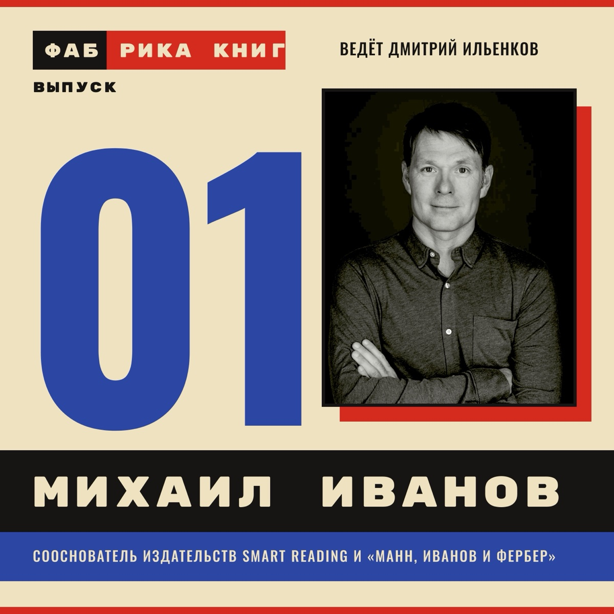

Михаил Иванов: зачем саммари, если есть ИИ
Гость — Михаил Иванов, сооснователь издательств Smart Reading и «Манн, Иванов и Фербер». Ведёт Дмитрий Ильенков.
О выпуске
Михаил Иванов — сооснователь издательств Smart Reading и «Манн, Иванов и Фербер», тренер по триатлону и человек, который учит семьи инвестировать. Мы поговорили о том, зачем читать саммари, если любую книгу перескажет ИИ, почему в кризис в России читают любовные романы, а в США — нон-фикшн, почему бизнес-книги раздувают до 400 страниц и почему после книги CEO о своей компании её акции лучше продать.
А ещё о том, как совмещать книги, спорт и инвестиции, кого заменит ИИ, как не забывать прочитанное и как Михаил лично написал пяти тысячам подписчиков Smart Reading. В конце — блиц: какую книгу дать руководителю на 2027 год и что сложнее, Ironman или новый бизнес.
«Фабрика книг» — подкаст Дмитрия Ильенкова. Разговор записан 12 ноября 2026 года на онлайн-конференции pmclub upskill week.
Книги из выпуска
Таймкоды
- 00:00Тизер
- 00:18Спасибо за МИФ и кто такой Михаил Иванов
- 01:55Несколько шляп: МИФ, Smart Reading и книги, которых не хватало
- 03:10Издательство как венчурный бизнес и контент-хаус
- 03:56Права на другие языки, Amazon и Ozon
- 05:15Тренер по триатлону: профессии, которым не учат
- 06:09Профессия или бизнес: парикмахер и сеть парикмахерских
- 07:00Зачем инвестировать: пенсии, инфляция, cash is trash
- 10:20Деньгам не учат в школе: курс для подростков
- 15:11Как совмещать три мира: клиенты и навык продаж
- 17:38МИФ из нехватки хороших переводов и «капелька крови» нового проекта
- 19:45Зачем саммари, если можно спросить ИИ
- 20:23В кризис Россия читает любовные романы, США — нон-фикшн
- 23:54Почему бизнес-книги раздуты до 400 страниц
- 26:18Книга, которую советует Дмитрий: «How Big Things Get Done»
- 26:57ИИ: K-shape и роман Пелевина «iPhuck 10»
- 31:13Извозчики Лондона и кого заменит ИИ
- 33:50Откуда брать энергию
- 36:18Как не забывать прочитанное: записывать, обсуждать, кейс-метод
- 38:29Блиц: книга руководителю на 2027 год и последнее саммари
- 40:45Самый переоценённый совет из бизнес-книг: книги CEO
- 42:42Что сложнее: Ironman или новый бизнес
- 43:51Ставка, в которую мало кто верит: личное общение
- 45:115000 личных писем подписчикам Smart Reading
- 47:24Проект «Расскажи»: книга о маме
- 50:06Совет на следующий год: себя нельзя найти, себя можно сделать
- 51:48Что дать детям почитать про инвестиции